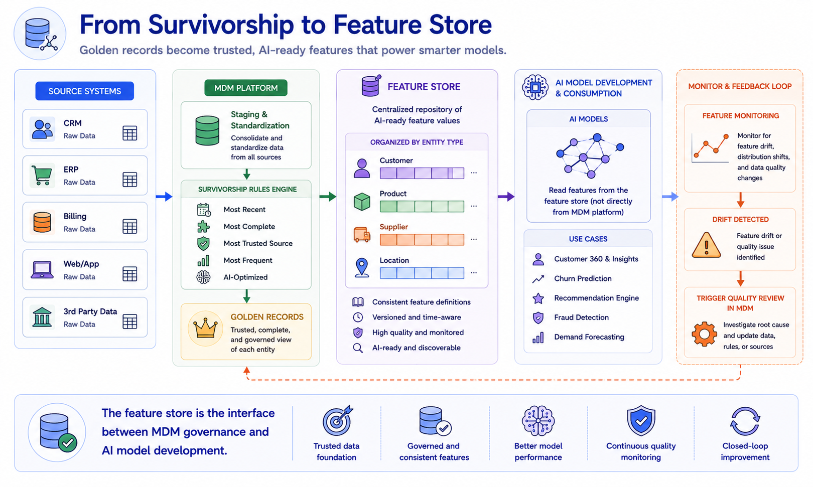
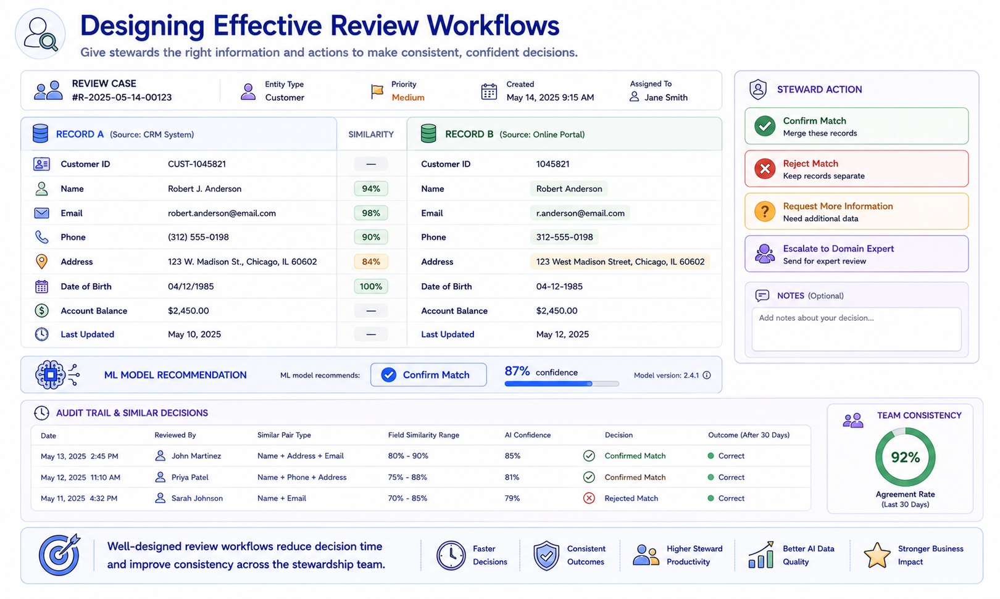
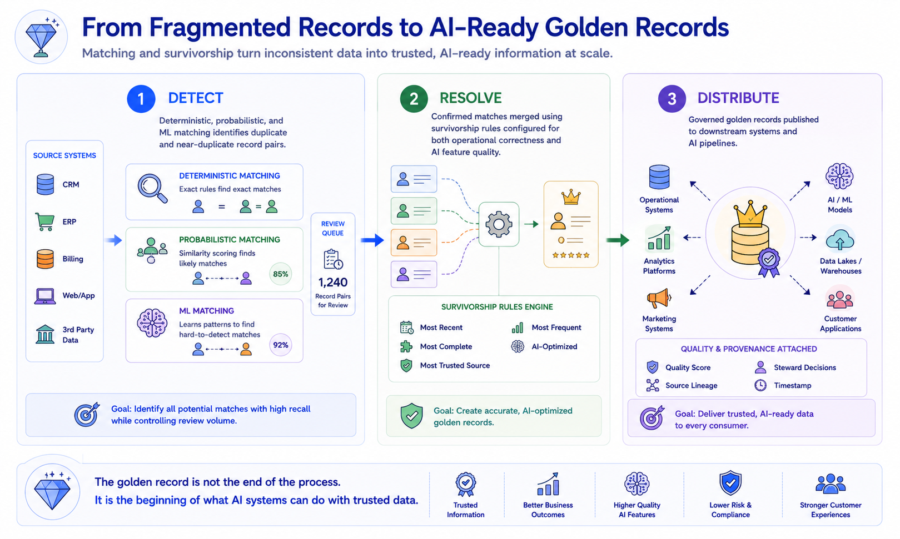

Matching and Survivorship Concepts
Module support notes
The Economics of Matching Accuracy
The economics of matching accuracy are asymmetric and context-dependent. In financial services, false positives carry significant regulatory risk — incorrectly merging two customers' records can violate know-your-customer regulations and create serious compliance exposure. In retail and consumer industries, false negatives typically carry higher costs — fragmented customer records degrade personalization models and inflate customer acquisition costs by treating existing customers as new prospects. In healthcare, both error types carry clinical risk.
Organizations should define their acceptable thresholds for each error type based on their industry context, regulatory environment, and AI program requirements — rather than optimizing for a single composite matching accuracy score that obscures the tradeoff between precision and recall.
Note
Matching accuracy is not a technical metric — it is a business performance indicator. False positives and false negatives both have measurable business costs and AI consequences. False positive merges corrupt golden records that feed AI models. False negatives fragment the entity history that AI personalization, forecasting, and risk models depend on.
![A cost model diagram with two columns. False Positive Costs include incorrect merges requiring manual separation, AI models retrained on corrupted golden records, customer experience failures, and regulatory risk. False Negative Costs include fragmented customer history degrading AI personalization, duplicate supplier records inflating procurement costs, and split patient records creating clinical risk. The center reads: Both error types have measurable business costs — and both have AI consequences.](../assets/m5-matching-economics.png)
Survivorship Rules and AI Feature Stores
The feature store pattern — a centralized repository of curated, versioned feature values that AI models consume during training and inference — is becoming an increasingly important integration point between MDM and AI programs. When survivorship rules in the MDM platform are designed with feature store requirements in mind, the golden record values that flow into the feature store are optimized for AI quality rather than just operational correctness.
This means configuring survivorship for AI-critical fields based on historical feature accuracy rather than standard business logic, implementing change detection that propagates golden record updates to feature store versions, and maintaining provenance metadata that allows feature store users to trace each feature value back to its source record and survivorship rule.
Tip
Establish the MDM-to-feature-store pipeline early in your AI program development — not after the first model is in production. Organizations that build this governed data supply chain from the start create a foundation that scales with their AI ambitions, rather than scrambling to retrofit governance onto a pipeline that was built without it.

Review Workflow Design for Human-in-the-Loop Matching
The efficiency and consistency of human review for borderline match cases significantly affects the overall quality of entity resolution. Poorly designed review workflows — presenting records without context, requiring stewards to navigate away from the review interface to verify information, or failing to surface the AI matching model's recommendation — result in slower decision times, higher steward fatigue, and less consistent outcomes.
Well-designed review workflows present the record pair in a side-by-side comparison with field-level similarity scores, surface the ML model's recommendation and confidence level as a reference point, provide access to the steward's own previous decisions on similar cases, and maintain a full audit trail of every decision for governance reporting.
Warning
Review workflow design is not a UX afterthought — it directly determines the quality of your matching outcomes. Every decision a steward makes on a borderline pair becomes training data for the ML matching model. Inconsistent decisions caused by poor workflow design degrade the model over time, creating a compounding quality problem that becomes harder to reverse the longer it continues.

Matching and survivorship are not a single step — they are a three-stage process that ends not with a merged record, but with a governed golden record ready to power AI systems.
